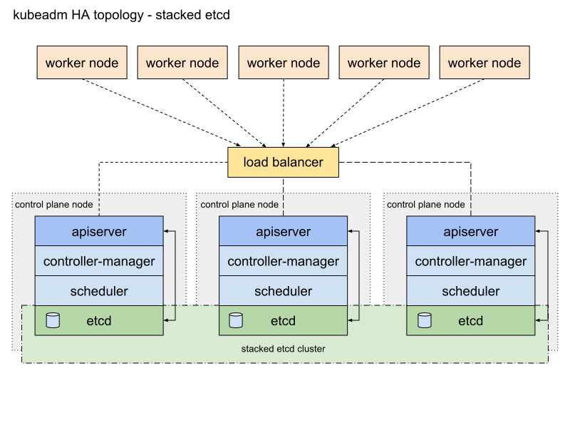
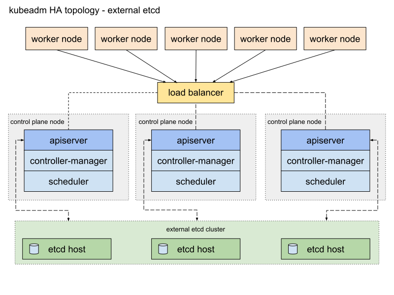

Kubernetes 控制面高可用方案
控制面高可用（HA）解决的是“部分控制面组件挂掉时，集群仍能接受请求并继续收敛“，它既不是备份，也不是灾备：
- HA：冗余 + 快速切换，让故障对 API 的可用性影响最小；不保护数据被误删、不会让错误配置回滚。
- 备份/灾备：数据丢了、quorum 永久丢失、集群被删之后怎么恢复；见 控制面灾备与恢复。
- 事故处理：已经挂了，值班的人怎么定位和止血；见 控制面事故处理手册。
本文只讨论设计和拓扑，不写“挂了之后逐步敲什么命令“。文中所有默认值、数字、行为都尽量固定到源码行或官方文档；版本基准如下：
| 项目 | 版本 | commit |
|---|---|---|
| Kubernetes | v1.37.2 | c50e5395f1ae2d4a2c05f28fdcc38c0916cc1a32 |
| etcd | v3.7.4（kubeadm 默认 3.7.0） | 2e8a5c99e4982c8d4c521be15364ea4c5c68a489 |
| kube-vip | v1.3.1 | 6da770eac1eed9409a9feaccda3d782c94424c24 |
引用约定：GitHub 链接一律带 40 位 commit 与行号区间，形如
.../blob/<commit>/<path>#Lx-Ly；文档链接为英文原 URL，正文中文。行号已用本地 checkout 核对。
1. 结论速览
控制面 HA 其实是三个互相独立的问题，不能用同一种手段解决：
| 问题 | 涉及组件 | 状态属性 | 主要手段 |
|---|---|---|---|
| A. API 入口的冗余 | kube-apiserver | 无状态（watch cache 只是内存缓存） | 多副本 + VIP/LB + 健康检查 |
| B. 唯一持久状态的多数派 | etcd | 有状态，Raft 复制 | 奇数成员、quorum、跨 AZ 布局、磁盘/网络预算 |
| C. 单活控制器的高可用 | kube-controller-manager、kube-scheduler、cloud-controller-manager | 无持久状态，但同一时刻只应有一个在 reconcile | 多副本 + Lease 选主（热备） |
先记住三条结论：
- kube-apiserver 可以随意多副本、active-active：它不把集群状态写本地，读写都落到 etcd（见 §2.1）。所以入口层的任务是“把请求送到任意一个活着的 apiserver“。
- etcd 的可用性只看 quorum：3 成员容忍 1 个故障，5 成员容忍 2 个；偶数成员不增加容错（见 §4.1）。
- KCM/scheduler 的切换时间是“秒级到十几秒级“，不是瞬时：Lease 默认
leaseDuration=15s、renewDeadline=10s、retryPeriod=2s（见 §6）。
一个常见误解是把“控制面 HA“当成“集群不会坏“。实际上 HA 只降低组件故障造成的停机概率；数据误删、证书过期、quorum 永久丢失、跨 AZ 网络分区导致的双主风险，都要靠灾备和事故流程兜底。
2. 组件状态模型：哪些东西必须冗余
flowchart LR
subgraph CP["控制面节点"]
KAS["kube-apiserver<br/>无持久状态"]
KCM["kube-controller-manager<br/>Lease 选主"]
SCH["kube-scheduler<br/>Lease 选主"]
ETCD["etcd 成员<br/>Raft 持久状态"]
end
KAS -->|"所有读写"| ETCD
KCM -->|"watch/list + 写 status"| KAS
SCH -->|"watch Pod/Node + 写绑定"| KAS
SCH -.->|"Lease 选主"| KAS
KCM -.->|"Lease 选主"| KAS
KUBELET["kubelet"] -->|"watch Pod / 上报 status"| KAS
2.1 kube-apiserver：无状态，但不等于“没内存“
apiserver 处理单个请求时，读路径直接访问 etcd：store.Get 里调用 etcd 客户端拿到 KV 再解码（store.go L235-L254）；写路径同样编码后写入 etcd（store.go L284-L320）。
它确实持有内存状态，但都是可重建的缓存/会话：
- watch cache：注释明确说它是一个“有容量上限的滑动窗口“（watch_cache.go L78-L81）。apiserver 重启后缓存清空，会从 etcd 重新 list/watch。
- 长连接（watch/exec/port-forward）、admission webhook 连接、aggregated API 的连接：断掉后客户端重连即可，不需要“迁移“。
因此 apiserver 可以水平扩展，且任意副本都能服务任意请求。真正需要关注的是：每个副本都能连到 etcd、证书一致、审计/加密配置一致。
2.2 etcd：集群对象状态的唯一持久化存储
Kubernetes 把 API 对象（Pod、Service、Deployment、Secret、CRD……）都存进 etcd；Raft 负责把这些写复制到多数派。etcd 官方 FAQ 对 quorum 的定义是 (n/2)+1，并指出集群只有在能建立成员多数派时才可操作（etcd FAQ）。
需要区分“持久状态“的边界：
- 在 etcd 里的：所有通过 API 创建/更新的对象、Lease、Event、CRD 定义等。
- 不在 etcd 里的：PKI（CA 私钥、apiserver/etcd 证书）、kubeconfig、static pod manifests、kubelet 本地状态、PV 里的业务数据。这些丢了 etcd 快照也救不回来——这是灾备篇的范围。
2.3 kube-controller-manager / kube-scheduler：多副本热备 + Lease 选主
这两个组件可以有多个副本同时运行，但同一时刻只有一个会真正执行 reconcile/调度：
- 它们都基于 client-go 的 leader election，用
coordination.k8s.io/v1的 Lease 对象做锁（leaderelection.go L211-L223、leaselock.go L27-L56）。 - 默认参数在 component-base 中：
leaseDuration=15s、renewDeadline=10s、retryPeriod=2s（defaults.go L37-L44）。kube-scheduler 显式写了同样的默认值与leases锁（options.go L112-L120）。 - KCM 的锁对象名/命名空间是
kube-controller-manager/kube-system（options.go L247-L248）；scheduler 是kube-scheduler/kube-system（同上 options.go）。
注意：多副本不会带来吞吐提升，第二个副本只是缩短故障切换时间。真正横向扩展的是 apiserver。
2.4 kubeadm 下的落地形态：static pod
kubeadm 把控制面组件都作为 static pod 交给本机 kubelet 管理：etcd 的 PodSpec 由 kubeadm 生成（local.go L194-L239），启动参数（listen/peer URL、initial-cluster、snapshot-count 等）在 getEtcdCommand 中拼装（local.go L242-L285），manifests 落在 kubelet 监听目录。kubelet 的 file source 从磁盘读取 static pod 配置（file.go L30-L44）；普通 Pod 则来自 apiserver 的 list/watch（apiserver.go L41-L58）。
这带来一个重要的 HA 性质：apiserver 挂掉不会让 kubelet 删掉 static pod，因为 static pod 的期望状态来自本地文件而不是 API。这也是“全部控制面 down 时控制面容器仍在跑“的底层原因之一（详见 §7.2）。
| 组件 | 是否有持久状态 | 多副本语义 | 故障时的影响 |
|---|---|---|---|
| kube-apiserver | 否（只有内存缓存） | active-active，任意副本可服务 | 少一个入口，LB 剔除即可；容量下降 |
| etcd | 是（Raft WAL/DB） | 多数派可写，少数派只读/拒绝写 | 丢失 quorum 则所有写失败 |
| kube-controller-manager | 否 | 一主多备，Lease 选主 | 切换窗口内无 reconcile；不丢已提交对象 |
| kube-scheduler | 否 | 一主多备，Lease 选主 | 切换窗口内新 Pod 不调度 |
| cloud-controller-manager | 否 | 一主多备，Lease 选主 | 切换窗口内 LB/路由/节点生命周期不更新 |
3. 拓扑方案对比
kubeadm 官方只定义了两种自建 HA 拓扑：stacked etcd 与 external etcd（kubeadm HA topology）。
3.1 stacked etcd：控制面与 etcd 同机

stacked 是 kubeadm 的默认形态：每台控制面节点上同时跑 etcd 成员和 apiserver/KCM/scheduler。优点是主机少、复制关系简单；缺点是故障耦合——一台机器挂掉，同时损失一个 etcd 成员和一个 apiserver 实例，官方文档明确把这种耦合称为 failed coupling 风险（kubeadm HA topology）。
flowchart TB
C["kubectl / CI / 控制器"] --> VIP["VIP 或 L4 LB<br/>:6443"]
VIP --> CP1
VIP --> CP2
VIP --> CP3
subgraph CP1["控制面节点 1（AZ-a）"]
A1["kube-apiserver"] --- E1[("etcd 成员 1")]
K1["kube-controller-manager<br/>kube-scheduler"]
end
subgraph CP2["控制面节点 2（AZ-b）"]
A2["kube-apiserver"] --- E2[("etcd 成员 2")]
K2["kube-controller-manager<br/>kube-scheduler"]
end
subgraph CP3["控制面节点 3（AZ-c）"]
A3["kube-apiserver"] --- E3[("etcd 成员 3")]
K3["kube-controller-manager<br/>kube-scheduler"]
end
E1 <-->|"Raft 2380"| E2
E2 <-->|"Raft 2380"| E3
E1 <-->|"Raft 2380"| E3
3.2 external etcd：控制面与 etcd 分离

external etcd 把 3 台 etcd 独立出来，控制面节点不再承担存储。官方文档的代价很直接：需要两倍主机数（3 台控制面 + 3 台 etcd 是最小 HA 配置）（kubeadm HA topology）。收益是故障不再耦合：丢一台控制面只损失一个 apiserver；丢一台 etcd 只损失一个投票成员。
kubeadm 通过 ClusterConfiguration.etcd.external.endpoints 配置外部 etcd（types.go L317-L336），internal/external 二选一（types.go L276-L285）。此时 apiserver 的 --etcd-servers 指向外部 etcd 的 client URL（etcd.go L168-L172）。
3.3 托管控制面
EKS/GKE/AKS 把控制面（apiserver、etcd、KCM、scheduler）放到云厂商管理的账号/网络里，用户在 SLA 范围内不接触这些机器。几个可验证的边界：
- 多可用区：GKE 的 regional cluster 明确是“同一 region 内多个 zone 各跑一份控制面副本“（GKE regional clusters）；EKS 的控制面 endpoint 分为 public/private（EKS cluster endpoint）；AKS 支持把节点池与系统组件分布在可用区（AKS availability zones）。
- SLA 是“控制面 API 可用性“，不是“你的业务可用性“：EKS 标准 SLA 为 99.95%（EKS SLA）；GKE 的 regional 控制面为 99.95%、zonal 控制面为 99.5%（GKE SLA）；AKS 的 SLA 条款见 Azure Kubernetes Service SLA。SLA 不覆盖工作负载、节点、CNI、LB 的故障。
3.4 hosted control plane 与轻量发行版
- hosted control plane：把控制面（至少 apiserver + etcd）作为工作负载跑在另一个管理集群里，租户集群只留 kubelet 和 CNI。它在“控制面与数据面解耦“上等价于 external etcd 的进一步加强版，但多了一层“管理集群自身也要 HA“的依赖。Kamaji 是这类实现的代表；Cluster API 生态里也有对应的 ControlPlane provider（Cluster API）。
- 轻量发行版：k3s 默认用 embedded etcd 或 SQLite/kine，k0s 用 etcd 或 kine + 内置 controller。它们把“控制面 HA“打包成单二进制/单进程，适合边缘与资源受限场景，但可调参数、故障域隔离、etcd 可观测性都比 kubeadm 弱。选它们之前先确认：控制面故障时谁负责、etcd 数据放哪、能否跨 AZ。
3.5 对比表
| 维度 | stacked etcd | external etcd | 托管控制面 | hosted control plane |
|---|---|---|---|---|
| 最小主机数（HA） | 3 | 6（3 CP + 3 etcd） | 0（厂商负责） | 1 个管理集群 + 3 台 worker |
| 故障域耦合 | 高（CP 与 etcd 同机） | 低 | 厂商定义（通常多 AZ） | 中（管理集群是单点风险） |
| 网络要求 | etcd peer 跨节点低 RTT | 同左，另加 CP→etcd | 厂商内网 | 租户→管理集群 API 网络 |
| 升级影响 | 每台机器同时重启 etcd+apiserver | 可分开滚动 etcd 与控制面 | 厂商窗口/自动 | 管理集群与租户解耦 |
| 成本 | 最低 | 约 2 倍主机 | 控制面费用 | 中 |
| 适用场景 | 中小自建集群、边缘 | 大规模、强隔离、已有独立 etcd 团队 | 不想运维控制面 | 多租户、控制面集中托管 |
3.6 节点数怎么选
- 至少 3 台控制面：这是 kubeadm 官方对 HA 的最低要求（kubeadm high availability）。
- 3 AZ 就选 3 台；2 AZ 时不要放 2 台 etcd：2 成员 quorum 是 2，挂任意一台就永久失去写能力，容错为 0（见 §4）。
- 5 台不是“更 HA“的默认答案：5 成员容忍 2 个故障，但写延迟随成员数增加，且跨 AZ 的 RTT/带宽成本更高。etcd FAQ 建议一般不超过 7 个成员（etcd FAQ）。
4. etcd quorum 与容量
4.1 quorum 数学
etcd 的写入需要多数派确认。quorum = (n/2)+1，容错 = n - quorum：
| 成员数 | quorum | 可容忍故障 | 说明 |
|---|---|---|---|
| 1 | 1 | 0 | 无 HA |
| 2 | 2 | 0 | 没有容错：挂 1 台即失去 quorum |
| 3 | 2 | 1 | 最常见的最小 HA |
| 4 | 3 | 1 | 与 3 成员容错相同，多一台机器 |
| 5 | 3 | 2 | 大规模/多 AZ 常用 |
| 6 | 4 | 2 | 与 5 成员容错相同 |
| 7 | 4 | 3 | 一般不建议超过 7 |
这张表来自 etcd FAQ 的 failure tolerance 部分（etcd FAQ）：奇数成员与比它大 1 的偶数成员容错相同；跨 AZ 时还要保证“任意一个 AZ 挂掉后仍有多数派“。
4.2 成员变更：learner 与“先删后加“
etcd 对成员变更有严格保护，集群会拒绝“变更后剩余存活成员不足 quorum“的请求：
- 增加投票成员前检查
nquorum := nmembers/2 + 1且nstarted >= nquorum（cluster.go L626-L655）。 - 删除成员、提升 learner 也有同样的 quorum 检查（cluster.go L659-L685、cluster.go L689-L707）。
- FAQ 的“先删后加“建议：在 3 成员集群里先增加新成员会把 quorum 从 2 抬到 3，新成员若起不来就永久失去 quorum；正确顺序是先移除坏成员再加新成员（etcd FAQ）。
kubeadm join 控制面时用的正是 learner 路径：先把新成员以 learner 身份加入（local.go L150-L160），等它追上日志后再 promote（local.go L176-L180）；AddMemberAsLearner 在 addMember 里根据布尔参数选择 API（etcd.go L432-L440）。learner 不投票、只复制日志，因此不会因“加入慢节点“直接抬高 quorum。
Warning
不要为了“恢复 quorum“盲目加成员。etcd 默认
strict-reconfig-check会拒绝可能导致 quorum 丢失的变更；绕过它（--strict-reconfig-check=false）是拿一致性冒险，正确路径是先恢复/移除坏成员。恢复与重建流程见 控制面灾备与恢复。
4.3 跨 AZ 延迟、fsync 与选举
etcd 的提交延迟由两件事决定：成员间网络 RTT + 本地 fdatasync。官方性能文档给的数量级：同机房 RTT 几百微秒，美国境内 RTT 约 50ms，跨洲可达 400ms；SSD 的 fdatasync 通常 <1ms，机械盘约 10ms（etcd performance）。
默认时序参数：心跳间隔 TickMs=100ms、选举超时 ElectionMs=1000ms（config.go L530-L535），且校验要求 election timeout 至少是 heartbeat 的 5 倍（config.go L1003-L1004）。
这带来两个直接结论：
- etcd 的 3 个成员应放在同一 region 的 3 个 AZ，AZ 间 RTT 通常 <1ms 到几 ms；跨 region 部署需要显式调大
heartbeat-interval/election-timeout，并且每次写都要多付 RTT。 - 慢盘会触发换主：etcd 把“能否按时 fsync Raft 日志“当作 leader 存活性的一部分，盘抖动会让 leader 被误判为失效而触发选举（etcd FAQ）。生产上应给 etcd 独占 SSD，避免和镜像/日志/业务 IO 抢盘。
4.4 WAL/DB 大小、quota 与压缩
etcd 默认后端 quota 是 2GiB，最大建议 8GiB（quota.go L26-L33）。写入超过 quota 时，etcd 会激活 NOSPACE alarm 并拒绝后续写（quota.go L40-L52），表现是 apiserver 所有写请求报 mvcc: database space exceeded。
HA 影响：
- NOSPACE 是集群级故障，不是单成员故障。任意成员接近 quota，都会影响写路径。
- 历史版本必须压缩：apiserver 自身会按
--etcd-compaction-interval发起 compaction，默认 5 分钟（config.go L36-L39），0 表示禁用（etcd.go L192-L194）；否则 revision 无限增长。 - compaction 只标记可回收，不归还磁盘，需要
etcdctl defrag或 maintenance 接口的Defragment（maintenance.go L119-L130）。 - defrag 是单成员、会阻塞：不要在业务高峰对所有成员并发 defrag；逐个做，并观察
etcdctl endpoint status的DB SIZE/DB SIZE IN USE（Status返回DbSize、DbSizeInUse、Leader、RaftIndex等，maintenance.go L261-L299）。
etcd 维护（compaction/defrag/quota/snapshot）的系统性说明见 etcd maintenance。
4.5 容量估算思路
etcd 容量不是看“磁盘多大“，而是看写入速率、对象数量、revision 增长速度：
- 小集群（<100 节点、少量 CRD）：3 成员，每成员 2–4 vCPU、8GiB 内存、独立 SSD 通常够用；这是经验值，最终要用
etcdctl check perf或实际负载验证。 - 大数据量（Event、大量 CRD、频繁更新）：优先缩短 Event TTL、降低高频对象的写放大，再考虑扩到 5 成员；不要把 etcd 当数据库用。
- 磁盘容量按 quota 的 2–3 倍规划，给 WAL、快照、defrag 腾挪空间。
硬件建议见 etcd hardware。
5. 流量入口：请求怎么到达某个活着的 apiserver
5.1 端口清单
kubeadm 集群的默认端口（constants.go L94-L107、constants.go L404-L413）：
| 端口 | 组件 | 用途 |
|---|---|---|
| 6443 | kube-apiserver | 客户端/组件访问 API（KubeAPIServerPort） |
| 2379 | etcd | client 流量（apiserver、etcdctl） |
| 2380 | etcd | peer 流量（Raft） |
| 2381 | etcd | metrics / 健康检查（kubeadm 配置的 listen-metrics-urls） |
| 10257 | kube-controller-manager | 自身 HTTPS 端口（healthz/metrics） |
| 10259 | kube-scheduler | 自身 HTTPS 端口（healthz/metrics） |
| 10250 | kubelet | 节点 API |
注意 2379/2380 绝不能暴露到公网；etcd 的 client 端口只对控制面/apiserver 网段开放。
5.2 四种入口方式
| 方式 | 原理 | 优点 | 风险 |
|---|---|---|---|
| DNS 轮询/多 A 记录 | 客户端解析到多个 apiserver IP | 无额外组件 | 客户端会缓存 DNS、失败重试不均衡；client-go 不保证故障转移 |
| L4 LB（云 LB/HAProxy/LVS） | TCP 转发到多个 6443 | 健康检查成熟、可跨 AZ | LB 自身要 HA；要区分 /livez 与 /readyz |
| VIP（kube-vip/keepalived） | 一个虚拟 IP 漂移到某台控制面 | 简单、无外部依赖 | L2 模式受广播域限制；漂移时间受选主影响 |
| in-cluster endpoints | Pod 通过 kubernetes.default Service 访问 | 集群内自动负载均衡 | 只覆盖集群内客户端；依赖 kube-proxy/CNI |
kubeadm 推荐用 --control-plane-endpoint 指定一个稳定的 VIP/DNS，各组件 kubeconfig 和证书 SAN 都指向它（types.go L99-L111）。这个地址会被写进 apiserver 证书的 SAN（pki_helpers.go L415-L425），所以上线后再改 endpoint 通常需要重新签发证书，属于高成本变更。
5.3 健康检查：/livez、/readyz、/healthz
kube-apiserver 暴露三个健康端点（health checks）：
/livez：是否该重启进程（死锁等不可恢复状态）。注意 etcd 的 health 组也会进入 livez，它不是“纯进程存活“。/readyz：是否可以服务请求；除 health 组外还包含 etcd-readiness 与 watch cache 初始同步等 readyz-only 检查。/healthz：已废弃（v1.16 起）的兼容端点，包含 healthz 组检查（kube-apiserver 里也含 etcd）。
etcd 检查的接线在 apiserver 的 etcd options 里：addEtcdHealthEndpoint 用 AddHealthChecks 把 etcd 组注册进 healthz/livez/readyz，再用 AddReadyzChecks 把 etcd-readiness 只注册进 readyz（etcd.go L421-L436、healthz.go L79-L110），底层是向 etcd 做带超时的探测（etcd3.go L113-L123）。
LB 的健康检查建议：
- 用
/readyz，但把失败阈值调大（例如连续失败 3 次才摘除）：etcd 短暂抖动会让所有 apiserver 同时 readyz 失败，阈值太小会把所有后端一起摘掉，等于制造一次全站故障。 - 不要只用 TCP 6443 探活：端口能连上不代表能读写 etcd；但如果只用
/readyz又可能因共享的 etcd 抖动而误摘。 - 滚动升级时配合 apiserver 的 drain/shutdown 延迟：
ShutdownDelayDuration期间/healthz仍 200、/readyz失败（config.go L243-L246），让 LB 先把流量摘走再关进程。
5.4 VIP 实现：kube-vip
kube-vip 支持 ARP（L2）和 BGP（L3）两种发布模式（kube-vip modes）：
- ARP 模式：VIP 配在 leader 节点的网卡上，周期性发送 gratuitous ARP/NDP 刷新交换机 MAC 表（arp.go L154-L166、arp.go L220）。官方给的“平均故障切换时间约 3 秒“，且依赖底层交换机是否放行（kube-vip ARP troubleshooting）。
- BGP 模式：把 VIP 作为 /32 或 /128 路由通告给上游路由器（bgp.go L52-L58），切换依赖 BGP 收敛，适合跨子网/裸金属。
kube-vip 的控制面 VIP 本身也是靠选主决定的：它用 Lease 对象竞选，默认 leaseDuration=15s、renewDeadline=10s、retryPeriod=2s（election.go L93-L116、config_generator.go L402-L412），并据此持有 VIP（clusterLeaderElection.go L19-L45）。
Warning
kube-vip 的控制面选主依赖同一个 apiserver。当全部控制面 down 时，Lease 无法续约，VIP 也就不会漂移——这是“控制面全挂时数据面还在跑，但新 apiserver 起不来“的典型鸡生蛋问题。生产上应保证至少有一个与 API 无关的带外恢复通道（串口/IPMI/云控制台），或改用外部 L4 LB。BGP 模式在数据面路径上更独立，但选主仍依赖 API。
5.5 客户端侧：kubeconfig 只有一个 server
kubeconfig 的 Cluster.Server 是单个 URL 字符串（clientcmd types.go L60-L75），client-go 没有内置的“多 apiserver 轮询/故障转移“。所以：
- 想要故障转移，必须靠 DNS/VIP/LB 提供稳定入口；
- 直接把 kubeconfig 指向某一台 apiserver 的 IP，那台挂了客户端就挂；
- 集群内组件（kubelet、kube-proxy、CoreDNS）通过
kubernetes.defaultService + kube-proxy 访问 apiserver，入口是 Endpoints/服务 VIP，不是某个具体节点。
6. 选主组件的高可用
6.1 Lease 选主循环
sequenceDiagram
participant A as 副本 A（leader）
participant B as 副本 B（standby）
participant API as kube-apiserver
participant ETCD as etcd
A->>API: Update Lease（每 retryPeriod=2s）
API->>ETCD: 持久化 Lease
Note over A: renew 连续失败至 renewDeadline=10s → 停止主导
B->>API: Get Lease（每 2s）
Note over B: 观察到 Lease 过期（leaseDuration=15s）→ 尝试 Update
B->>API: Update Lease 成功 → OnStartedLeading
关键代码路径（client-go）：
Run先acquire，成功后启动OnStartedLeading，进入renew（leaderelection.go L211-L223）。acquire用JitterUntil按retryPeriod轮询tryAcquireOrRenew（leaderelection.go L250-L276）。renew在renewDeadline内持续重试；一旦失败就退出主导（leaderelection.go L279-L314）。tryAcquireOrRenew先走“leader 乐观更新“快路径，再回退到 Get/比较/Update；只有当旧记录为空或已过期时，非 leader 才能抢占（leaderelection.go L441-L490）。
6.2 故障切换时间
按默认参数，可以这样估算一次 leader 故障：
| 阶段 | 时间 |
|---|---|
| leader 进程崩溃/失联，Lease 不再续约 | t=0 |
原 leader 的 renew 在 renewDeadline=10s 后放弃，停止主导 | ≤10s |
standby 观察到 Lease 过期（leaseDuration=15s） | ≤15s |
standby 按 retryPeriod=2s 抢锁 | 0–2s |
| 合计 | 约 15–17 秒（经验估算，取决于 API 延迟与时钟） |
这个数字说明：不要把“controller-manager 切换“设计进秒级恢复的路径。对时延敏感的业务应尽量不依赖控制面实时 reconcile；对可用性敏感的系统要接受“十几秒内没有新调度、没有新副本“。
6.3 语义与前提
- 不是严格单活：leaderelection 包注释明确说它不保证只有一个客户端在行动（没有 fencing）（leaderelection.go L18-L28）。实际安全由控制器的乐观并发（resourceVersion）兜底，而不是锁本身。
- 容忍时钟速率差，不容忍任意时钟跳变：算法只用本地时间观察“记录是否变化“，因此对绝对时钟偏差不敏感，但对时钟速率差敏感；注释建议用
leaseDuration/renewDeadline的比例来配置容忍度（leaderelection.go L26-L44）。生产上仍应部署 NTP/chrony。 - 选主依赖 etcd quorum：Lease 本身是 etcd 对象；quorum 丢失时，leader 无法续约、standby 无法抢锁，所有单活组件一起停摆。
- 选主流量有专门的 APF 保护：默认 FlowSchema
system-leader-election把 KCM/scheduler 的 Lease 请求路由到leader-election优先级（NominalConcurrencyShares=10，bootstrap/default.go L294-L306）。这解释了为什么 API 过载时选主通常还能工作。standby 每 2s 发一次 Get，2–3 副本足够，更多副本只增加 API 负载。
7. 失效域分析矩阵
7.1 场景矩阵
假设 3 台控制面、stacked etcd、3 AZ 各 1 台（external etcd 场景另列）：
| 场景 | etcd 状态 | apiserver | KCM/scheduler | 数据面 | 恢复后 |
|---|---|---|---|---|---|
| 1 台控制面 down（stacked） | 剩 2/3，quorum=2，可写 | 剩 2 个入口 | leader 若在故障机，约 15–17s 后切换 | 存量 Pod 继续跑；新 Pod 可调度 | 故障机恢复后 etcd 自动追日志；无需人工 |
| 2 台控制面 down（stacked，3 成员） | 剩 1/3，失去 quorum | 仍可能响应，但读/写失败 | 无法选主 | 存量 Pod 继续跑；无新调度/无 reconcile | 第 2 台恢复即恢复 quorum；不要急着重装 |
| 1 台 external etcd down | 剩 2/3，可写 | 不受影响 | 正常 | 正常 | 恢复后自动追赶 |
| 2 台 external etcd down | 剩 1/3，失去 quorum | 全部写失败 | 停止 | 存量 Pod 继续跑 | 同 stacked |
| 1 台控制面 down（external etcd） | 不受影响 | 剩 2 个入口 | 可能切换 | 正常 | 正常 |
| 单 AZ 故障（3 AZ 各 1 台） | 剩 2/3，可写 | 剩 2 个入口 | 若 leader 在该 AZ 则切换 | 该 AZ 的 Pod 受影响；其他 AZ 继续 | 云上节点重新拉起后自动恢复 |
| 网络分区：少数派一侧 | 无法与多数派通信，不能写 | 请求可能超时/失败 | 无法续约，停止主导 | 该侧 Pod 继续跑但无法上报状态 | 分区恢复后 Raft 自动对齐 |
| 网络分区：多数派一侧 | quorum 仍在，可写 | 正常服务 | 重新选主，继续工作 | 正常 | 分区恢复后少数派追日志 |
| 全部控制面 down | 无 quorum/无成员可达 | 全部不可用 | 全部停 | 存量 Pod 继续跑（见 §7.2） | kubelet 重新连上后上报；注意节点状态与 Lease |
两个容易忽略的细节：stacked 拓扑下“1 台机器 down“是双重故障（apiserver + etcd 成员），但 3 成员还剩 2 仍满足 quorum；只剩 1 台机器时 etcd 先失去 quorum，apiserver 再多也没用。奇数控制面不等于奇数 etcd：external etcd 时控制面 3 台、etcd 5 台，各自独立计算 quorum——故障域矩阵要按 etcd 视图看，而不是按节点数看。
7.2 全部控制面 down 时，数据面到底发生什么
这是 HA 设计里最常被问的问题。结论是：数据面进入“冻结“状态，而不是“崩溃“。
| 行为 | 是否继续 | 原因 |
|---|---|---|
| 存量 Pod 的容器进程 | ✅ 继续运行 | 容器由 runtime/shim 持有；kubelet 不会因为 API 不可达而杀 Pod |
| kubelet 维持 Pod 期望状态 | ✅ 继续 | kubelet 的 Pod 来源是本地缓存 + static 文件源；API 只是其中一个来源 |
| static pod（含控制面容器） | ✅ 继续 | 期望状态来自 /etc/kubernetes/manifests 文件（file.go L30-L44） |
| 新建/删除 Pod | ❌ 停止 | 所有写操作都经过 apiserver → etcd |
| Deployment/StatefulSet/CronJob/HPA 收敛 | ❌ 停止 | KCM 停止（Lease 无法续约） |
| 新 Pod 调度 | ❌ 停止 | scheduler 停止 |
| Service/Endpoints 更新 | ❌ 停止 | EndpointSlice 控制器在 KCM 中 |
| 已有 Service 的转发 | ✅ 通常继续 | kube-proxy 保留最后一次下发的 iptables/IPVS 规则；已有连接可能保持 |
| DNS 解析 | ⚠️ 部分继续 | CoreDNS 进程可继续响应缓存/已加载记录；新的 Service 记录无法更新；未缓存的外部域名仍可 forward |
| 节点被标记 NotReady | ⚠️ 不会立即发生 | 标记 NotReady 的是 KCM 的 node lifecycle controller；控制面全挂时它也没在跑 |
kubectl exec/port-forward/logs、监控写入 | ❌ 停止 | 都需要经过 apiserver；本地日志采集可继续 |
与 kubelet 相关的两个可验证数字：
- kubelet 每 10s 计算并上报节点状态（
nodeStatusUpdateFrequency默认 10s），node lease 默认 40s 过期（kubelet config types L330-L357）。 - KCM 的 node lifecycle controller 默认
NodeMonitorGracePeriod=50s、PodEvictionTimeout=5m（nodelifecycle defaults L33-L50）。
Warning
控制面恢复时有一个恢复期陷阱：控制面 down 期间所有 Node 的 Lease 都已过期。如果恢复后某些 kubelet 仍连不上 apiserver，node lifecycle controller 会按正常逻辑把节点标 NotReady，并在
PodEvictionTimeout=5m后驱逐 Pod。恢复时优先确认 kubelet→apiserver 网络已通，再让 KCM 大量处理过期 Lease。
以上“数据面继续“的判断中，容器与 kubelet 行为有源码/文档依据；CoreDNS 缓存、kube-proxy 保留规则属于实现语义推论（通常成立，但取决于具体版本与配置），不应作为 SLA 承诺。
8. 规模化与性能
8.1 APF：保护 apiserver 与 etcd 的主机制
API Priority and Fairness（APF）把请求按 FlowSchema 分到 PriorityLevel，再做排队/限流。它在 apiserver 内部，是比 --max-requests-inflight 更细的保护层（概念见 API Priority and Fairness）。
默认的 PriorityLevel 及份额（bootstrap/default.go L168-L219）：
| PriorityLevel | NominalConcurrencyShares | 用途 |
|---|---|---|
system | 30 | 系统组件、自维护请求（含 kubelet/kube-proxy） |
node-high | 40 | 节点健康上报（大规模集群 50%–90% 的请求） |
leader-election | 10 | KCM/scheduler 选主 |
workload-high | 40 | scheduler、内置工作负载控制器 |
workload-low | 100 | 普通 ServiceAccount 工作负载 |
global-default | 20 | 其余流量 |
总并发上限 = max-requests-inflight + max-mutating-requests-inflight，默认 400 + 200 = 600（config.go L449-L453；两个 flag 定义见 server_run_options.go L348-L360）。每个 PL 的并发限额按 ceil(serverCL * shares / shareSum) 分配（apf_controller.go L857-L864）。
按默认 shares（总和 240）估算：system ≈ 75、node-high = 100、leader-election = 25、workload-high = 100、workload-low = 250、global-default = 50。这解释了两个现象：
- 大规模集群里 kubelet 上报会吃掉大量并发，这是
node-high份额最大的原因； - 业务请求把
workload-*打满时，system/leader-election仍有保底，控制面不至于被业务流量拖死。
8.2 etcd 磁盘与网络
- 写延迟 ≈ RTT + fdatasync；同 region 多 AZ 部署要把 RTT 控制在个位数 ms。
- 监控
wal_fsync_duration_secondsp99 < 10ms、backend_commit_duration_secondsp99 < 25ms 是 FAQ 给出的健康线（etcd FAQ）。 - 使用本地 SSD/NVMe；云盘优先选高 IOPS 的 provisioned 盘；不要让 etcd 与镜像仓库、日志盘共享 IO。
8.3 watch cache 与对象规模
watch cache 把 LIST/WATCH 从 etcd 卸载到 apiserver 内存，但它在 apiserver 重启后要重新建立：启动时的全量 LIST 会打 etcd。影响 HA 的几个点：
- 大量 CRD、大对象（大 Secret、大 ConfigMap）会显著增加每个 apiserver 的内存占用；多副本时内存成本 × 副本数。
- Event 是高频写入源，控制面故障恢复时大量 Event 可能造成写入尖峰。
--watch-cache-sizes已基本被动态 sizing 取代（flag 提示“只对 0 有意义“），不要依赖手工调大缓存解决性能问题（etcd.go L147-L163）。
8.4 容量估算的思路
不要凭“节点数 × 固定 QPS“拍数字，按来源拆：
- kubelet：每节点每 10s 上报 status + 续 node lease；节点数 × 0.2 QPS 量级（经验值）。
- controllers：KCM 的 informer 全量 watch，对象越多，list/watch 越重。
- 业务客户端与突发：kubectl/CI/Operator 的 list/watch 频率；故障恢复、滚动发布、大规模调度会放大写入。
把这些加起来，再留 2–3 倍余量，用压测（如 kubectl create --dry-run 批量请求或 APF 指标）验证，而不是只看 CPU 使用率。
9. kubeadm HA 部署要点
9.1 前置条件
- 3 台以上满足 kubeadm 要求的控制面节点，奇数台更利于 etcd quorum（kubeadm high availability）。
- 一个稳定的入口：VIP（kube-vip）或 L4 LB 的 DNS 名，端口指向 6443。
- 所有节点时间同步（chrony/NTP）、主机名唯一、
/etc/hosts或内部 DNS 可解析。 - etcd 数据目录在独立 SSD 上；如果控制面与业务混部，给 apiserver/etcd 留足 CPU/内存。
9.2 stacked HA 的关键命令
第一台控制面（注意 --control-plane-endpoint 与 --upload-certs）：
sudo kubeadm init \
--control-plane-endpoint "k8s-api.example.com:6443" \
--upload-certs \
--pod-network-cidr 10.244.0.0/16
--control-plane-endpoint 的 flag 定义见 init.go L235-L240；--upload-certs 把控制面证书加密上传到 kubeadm-certs Secret（init.go L270-L273）。
其余控制面节点：
sudo kubeadm join k8s-api.example.com:6443 \
--token <token> \
--discovery-token-ca-cert-hash sha256:<hash> \
--control-plane \
--certificate-key <key>
--certificate-key 在 join 侧对应 JoinConfiguration.controlPlane.certificateKey（join.go L263-L266）。
Warning
官方文档说明：
--upload-certs上传的证书会在 2 小时后被删除，需要重新上传时用kubeadm init phase upload-certs --upload-certs（kubeadm high availability）。不要把它当证书备份——真正的 PKI 备份见 控制面灾备与恢复。
worker 节点直接用不带 --control-plane 的 join 命令；它们只需要连到 endpoint，不需要证书 key。
9.3 external etcd 的差异
external etcd 需要先准备好独立 etcd 集群（3 或 5 成员），然后在 kubeadm 配置里声明：
apiVersion: kubeadm.k8s.io/v1beta4
kind: ClusterConfiguration
etcd:
external:
endpoints:
- https://10.0.0.11:2379
- https://10.0.0.12:2379
- https://10.0.0.13:2379
caFile: /etc/kubernetes/pki/etcd/ca.crt
certFile: /etc/kubernetes/pki/apiserver-etcd-client.crt
keyFile: /etc/kubernetes/pki/apiserver-etcd-client.key
字段定义见 types.go L317-L336。注意 external etcd 的备份/恢复、证书、成员管理都在 etcd 团队手里，kubeadm 不再介入。
9.4 放置与隔离
- 控制面跨 3 个 AZ 各 1 台；不要 3 台都在同一机架/同一电源域。
- etcd 与控制面同机时，给 etcd 数据目录独立盘；不要和镜像存储、容器日志共用一块慢盘。
- 控制面节点加 taint（kubeadm 默认加
node-role.kubernetes.io/control-plane:NoSchedule，initconfiguration.go L109-L112），避免业务 Pod 抢控制面资源。 - kubeadm 给 etcd static pod 的默认 requests 只有 100m CPU / 100Mi 内存（local.go L215-L220），生产大集群要按实际调大。
9.5 LB/VIP 配置要点
以 HAProxy 为例（TCP 透传，不做 TLS 终止）：
frontend k8s-api
bind *:6443
mode tcp
default_backend k8s-api-backend
backend k8s-api-backend
mode tcp
option tcp-check
balance roundrobin
server cp1 10.0.0.11:6443 check check-ssl verify none
server cp2 10.0.0.12:6443 check check-ssl verify none
server cp3 10.0.0.13:6443 check check-ssl verify none
- 用 TCP 透传，不要终止 TLS：客户端证书认证、SPDY/WebSocket、HTTP/2 都由 apiserver 处理。
- 健康检查优先
/readyz（HTTP 模式）或带check-ssl的 TCP 检查，并把fall/rise调大，避免共享 etcd 抖动导致全部摘除。 - LB 自身要 HA（双活 + VIP/Anycast），否则它成为新的单点。
10. 升级与变更
10.1 滚动顺序
kubeadm 官方升级流程（kubeadm upgrade）：
kubeadm upgrade plan检查可升级版本与集群健康。- 第一个控制面节点：
kubeadm upgrade apply v1.37.x。 - 其余控制面节点：
kubeadm upgrade node，然后重启 kubelet。 - worker 节点：
kubeadm upgrade node+ 重启 kubelet。
控制面升级的可用性分析（stacked，3 节点）：
- 升级一台时，etcd 剩 2/3（quorum 满足），apiserver 剩 2 个入口；LB 通过健康检查摘掉正在重启的节点。
- 绝不能同时升级两台：那会同时损失 2 个 etcd 成员，quorum 立即丢失，升级脚本自己也会卡在 etcd 健康检查上。
- external etcd 可以把 etcd 滚动升级与控制面滚动升级解耦，风险更低。
10.2 版本 skew
kubeadm 的版本约束（constants.go L483-L490）：
- 控制面组件之间允许的 skew 是
-1minor（MinimumControlPlaneVersion）。 - kubelet 允许落后控制面
-3个 minor（MinimumKubeletVersion）。 - etcd 版本与 Kubernetes 版本的对应关系由
SupportedEtcdVersion表维护，例如 v1.34–v1.36 都对应 etcd 3.7.0（constants.go L511-L514）；kubeadm 的默认 etcd 版本是 3.7.0-0（constants.go L327-L330）。
完整的 skew 规则见 Kubernetes version skew policy。
10.3 回滚边界
- kubeadm 不支持 downgrade。升级失败后的“回滚“实际上是：恢复升级前的 etcd 快照 + 重装旧版本二进制 + 重新加入节点；且 etcd 数据格式一旦升级，旧版本二进制可能无法读，代价远大于谨慎升级。
- 升级前必须确认：etcd 快照、PKI、kubeconfig、静态 pod manifests 都已备份，并且恢复流程演练过（见 控制面灾备与恢复）。
11. 托管 Kubernetes 的 HA 边界
托管控制面的 HA 由厂商负责，但“责任分界“经常被误解：
| 事项 | 自建 | 托管 |
|---|---|---|
| apiserver/etcd 多副本与 quorum | 你负责 | 厂商负责（SLA 覆盖） |
| 控制面节点 SSH / etcd 访问 | 可以 | 通常不可见/不可登 |
| apiserver flag / APF 调参 | 可以 | 受限或不可改 |
| 控制面升级窗口 | 你决定 | 厂商窗口（部分产品可配维护窗口） |
| 节点池/工作负载 HA | 你负责 | 你负责 |
| etcd 备份 | 你做快照 | 厂商做控制面备份，但你不能用 etcd 快照恢复业务对象 |
| 业务对象备份/恢复 | 自己做 | 自己做（Velero 等） |
| SLA 赔偿 | 无 | 按厂商条款 |
几个可验证的边界：
- EKS 的控制面 endpoint 有 public/private 两种模式，private 模式要求节点在 VPC 内访问（EKS cluster endpoint）；控制面本身跨 AZ，但你的节点池是否跨 AZ 要自己配。
- GKE regional cluster 的控制面是“同一 region 多 zone 多副本“，zonal cluster 只有一份控制面（GKE regional clusters），这也是 zonal SLA 99.5% vs regional 99.95% 的原因（GKE SLA）。
- AKS 支持把节点池/系统组件分布到可用区（AKS availability zones），但控制面 AZ 分布由厂商决定。
结论：托管控制面把“控制面机器“的 HA 外包了，但没有外包“数据保护“和“工作负载 HA“。你仍然需要：跨 AZ 节点池、PodDisruptionBudget、多副本、业务对象备份、多集群 DR（见 控制面灾备与恢复）。
12. 选型决策树与常见误区
12.1 决策树
flowchart TD
S["需要 HA 的控制面"] --> Q1{"能接受控制面由厂商运维？"}
Q1 -->|"是"| M["托管控制面<br/>EKS/GKE/AKS<br/>选 regional/多 AZ + 节点池跨 AZ"]
Q1 -->|"否"| Q2{"是否需要控制面/etcd 强隔离<br/>或已有独立 etcd 团队？"}
Q2 -->|"否"| Q3{"主机数 ≤ 5 且无跨 region 需求？"}
Q3 -->|"是"| ST["stacked etcd<br/>3 台控制面跨 3 AZ"]
Q3 -->|"否"| EX["external etcd<br/>3 台 CP + 3/5 台 etcd"]
Q2 -->|"是"| EX
M --> Q4{"是否需要多云/多集群灾备？"}
EX --> Q4
ST --> Q4
Q4 -->|"是"| DR["多集群 DR + 对象备份<br/>Velero / 定期恢复演练"]
Q4 -->|"否"| DONE["单集群内 HA 即可<br/>仍需 etcd 快照"]
12.2 常见误区
| 误区 | 为什么错 | 正确做法 |
|---|---|---|
| “3 台控制面都在同一 AZ，也算 HA” | AZ 故障会同时带走全部控制面 | 跨 3 AZ，或至少跨机架/电源域 |
| “2 台 etcd 比 1 台安全” | 2 成员 quorum=2，挂 1 台即失去写能力 | 3 或 5 成员；2 台不如单点+备份 |
| “4 台 etcd 容错更高” | 4 成员 quorum=3，容错仍为 1 | 奇数成员 |
| “LB 探活 6443 端口通就行” | 端口通但 etcd 不可用时 apiserver 不能服务 | 用 /readyz + 合理阈值 |
| “VIP 和 BGP 可以随便混着上” | 同一 VIP 用两种发布方式会路由冲突/L2 环路 | 二选一，按数据中心能力选 |
| “controller-manager 多副本能分摊负载” | 只有 leader 在 reconcile | 多副本只为缩短切换时间 |
| “stacked 下可以同时升级两台” | 同时损失 2 个 etcd 成员 → quorum 丢失 | 串行升级，一台健康后再下一台 |
| “做了 HA 就不需要备份” | HA 防组件故障，不防误删/勒索/逻辑损坏 | etcd 快照 + PKI 备份 + 定期恢复演练 |
| “托管集群不用备份工作负载” | 托管只保控制面可用性，不保你的对象 | Velero/对象存储备份 + 跨 region 副本 |
“--control-plane-endpoint 以后还能随便改” | 地址进证书 SAN，改要重签证书 | 初始化前定好稳定 DNS/VIP |
| “kube-vip 在 API 全挂时还能漂移” | VIP 选主依赖同一套 apiserver Lease | 带外恢复通道 / 外部 LB |
| “忽略 NTP” | 选主容忍速率差但不容忍跳变；日志/证书校验也依赖时间 | 全节点 chrony + 监控时钟偏移 |
参考资料
官方文档
- Kubernetes：Options for Highly Available Topology
- Kubernetes：Creating Highly Available Clusters with kubeadm
- Kubernetes：kubeadm init / kubeadm join
- Kubernetes：Upgrading kubeadm clusters
- Kubernetes：Version skew policy
- Kubernetes：kube-apiserver reference
- Kubernetes：API health endpoints
- Kubernetes：API Priority and Fairness
- Kubernetes：Nodes
- etcd：FAQ（quorum / failure tolerance / 磁盘）
- etcd：Maintenance（compaction / defrag / quota）
- etcd：Understanding performance
- etcd：Hardware recommendations
- etcd：Clustering guide
- kube-vip：Modes / Architecture / ARP troubleshooting（故障切换时间）
- 云厂商：EKS SLA / EKS cluster endpoint
- 云厂商：GKE SLA / GKE regional clusters
- 云厂商：AKS SLA / AKS availability zones
- Cluster API（hosted control plane 相关实现的基础）
源码（pinned）
- Kubernetes v1.37.2 选主：leaderelection.go / leaselock.go / component-base defaults.go
- Kubernetes apiserver 存储与健康：etcd3/store.go / etcd3 healthcheck / server options etcd.go
- Kubernetes APF：bootstrap defaults / apf_controller.go
- kubeadm：constants.go / etcd local.go / etcd util / init.go / join.go / kubeadm types.go
- kubelet 配置来源：file.go / apiserver.go / kubelet config types.go
- etcd v3.7.4：membership/cluster.go / storage/quota.go / v3rpc maintenance.go / embed config.go
- kube-vip v1.3.1：clusterLeaderElection.go / election.go / arp.go / bgp.go
事故复盘与延伸阅读
- etcd FAQ 中关于 leader 因磁盘延迟被换掉、heartbeat 超时、snapshot 过慢的排障条目：etcd FAQ
- kube-vip ARP 故障切换时间与调试：Troubleshooting ARP
- kubeadm 升级与 skew：kubeadm upgrade / version skew policy
本 wiki 相关页面
- 控制面灾备与恢复：etcd 快照、quorum 丢失恢复、集群重建、Velero
- 控制面事故处理手册：症状→层决策树、分场景 runbook、事故流程
- kube-apiserver 笔记
- APF 与 FlowSchema
- client-go list & watch 原理
- kubelet 原理
- 容器运行时全链路
- RBAC
- Cluster API